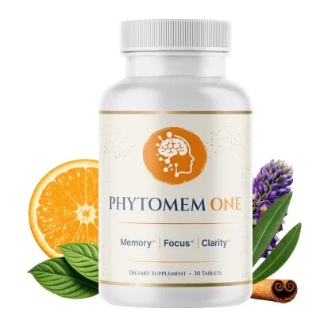
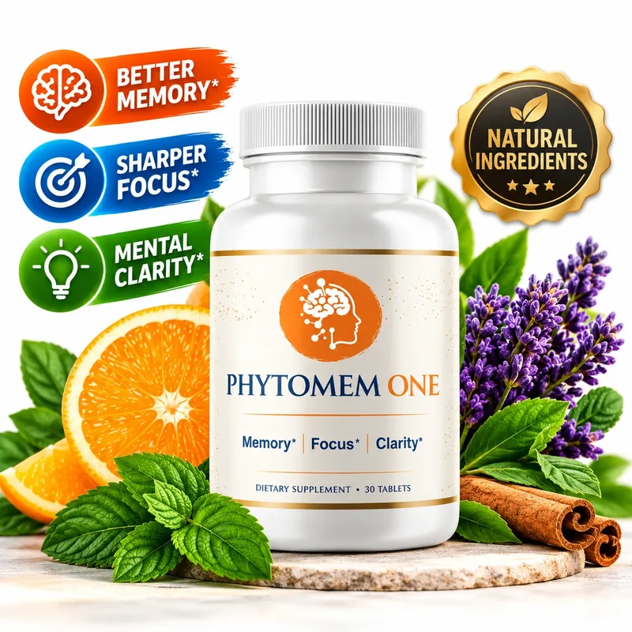
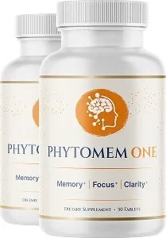
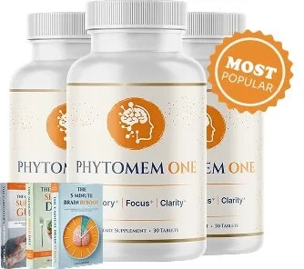
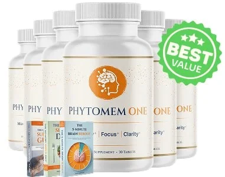
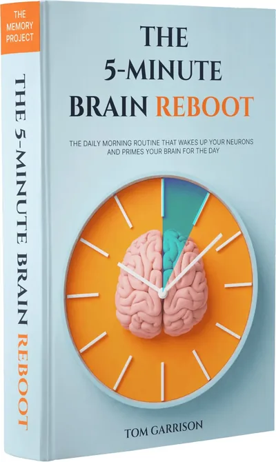
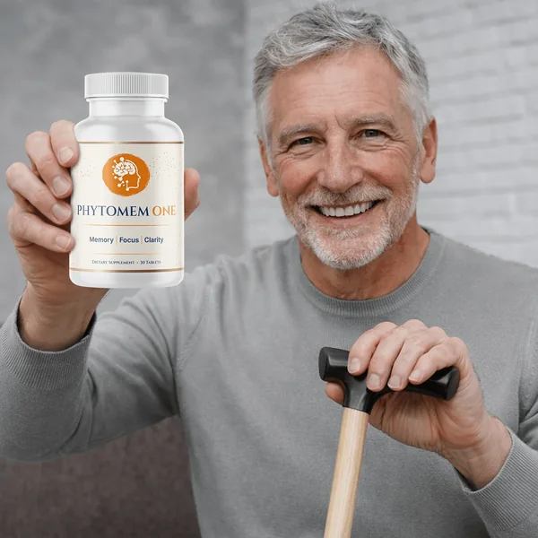
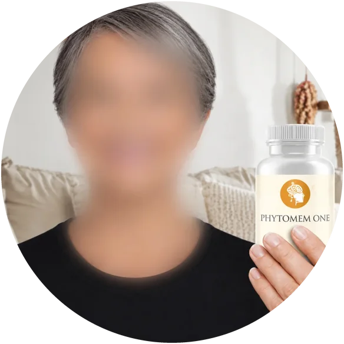

Independent review · Brain health supplement
Phytomem One Reviews: What You Should Know Before You Buy
If you are searching for honest Phytomem One reviews, start here. We went through the vendor's sales page, looked at what the ingredients are known for, and flagged what is promising, what is unproven and what deserves a second look.

Phytomem One Reviews: The Short Version
Phytomem One is a once-daily supplement sold online for memory, focus and "mental clarity." The pitch is a two-part formula: antioxidant-type ingredients to support the brain's defenses, and ingredients linked to healthy blood sugar handling so brain cells have steady fuel.
That idea is not silly. Researchers do study how glucose metabolism and oxidative stress relate to brain health. The catch is the gap between an interesting idea and proof that this particular capsule improves memory. We did not find clinical trial results for the finished product on the vendor's page, so the honest position is: plausible concept, unproven outcome.
What we like
- A clear, readable ingredient list with 10 named ingredients.
- A stated 60-day money-back guarantee and a one-time purchase.
- Pricing that falls noticeably per bottle on larger packs.
- The vendor includes the standard FDA and medical disclaimers.
What gives us pause
- No clinical evidence for the finished formula is shown.
- Per-ingredient amounts were not visible on the page we reviewed.
- Several ingredients can affect blood sugar, so interactions matter.
- Urgency tactics, "free" bonus values and recreated visuals.
What Is Phytomem One?
Phytomem One is positioned as "precision brain support for lasting focus and mental clarity." The vendor calls it a 10-in-1 formula and groups the ingredients into three clusters: a Cellular Defense Matrix, a Brain Fuel and Vitality Complex, and a Neural Amplifier System. It is a dietary supplement, not a medicine, and the vendor's own footer says it is not intended to diagnose, treat, cure or prevent any disease.
The directions say to take one capsule daily with food. (Packaging images and the sales page use both "capsule" and "tablet," so check the label you receive.) The vendor also says it is non-GMO, stimulant-free and made in a facility that follows USDA National Organic Program handling standards. Those are the vendor's statements; we have not audited the facility.

How Phytomem One Is Supposed to Work
The marketing story rests on two ideas. First, everyday oxidative stress can wear on brain cells, so antioxidant ingredients such as saffron, fucoxanthin, fucoidan and oleuropein are included. Second, the brain uses a lot of glucose, so the formula adds berberine, Ceylon cinnamon, corosolic acid and kudzu, which are often discussed in connection with healthy glucose handling.
Here is the plain-language reality check. The science around brain energy metabolism is real and active. But most of the research on these ingredients looks at blood sugar, cholesterol, mood or lab and animal models, not at whether a healthy adult's memory improves after taking a capsule. That is why we call the claims plausible rather than proven. Our ingredient-by-ingredient breakdown goes through what is and is not known.
Phytomem One Ingredients at a Glance
| Ingredient | What the vendor says | Our plain-language note |
|---|---|---|
| Saffron extract | Antioxidant support for brain cells | Small human trials exist, mostly on mood. Cognition data are limited. |
| Fucoxanthin | Healthy neural communication | Seaweed-derived. Human evidence for brain outcomes is thin. |
| Fucoidan | Antioxidant profile | Seaweed-derived. Mostly lab and animal research. |
| Oleuropein (olive leaf) | Healthy blood sugar balance, antioxidant | Small studies on blood pressure and glucose. Not memory. |
| Berberine HCl | Activates AMPK, supports glucose use | Best studied for blood sugar. Can cause stomach upset and interact with medicines. |
| Ceylon cinnamon | Healthy insulin sensitivity | Mixed evidence on blood sugar. Ceylon type is lower in coumarin than cassia. |
| Corosolic acid (banaba) | Healthy glucose transport | Small studies on glucose. Can add to blood-sugar-lowering effects. |
| Kudzu flower extract | Healthy cellular glucose uptake | Contains isoflavones. Limited cognitive evidence. |
| Morosil (red orange) | Metabolic function, antioxidant defense | Studied mainly for body composition, not for the brain. |
| Xylitol | Clean cognitive fuel | A sweetener. No cognitive claims are supported. Toxic to dogs, so keep it away from pets. |
The sales page we reviewed lists ingredient names but not amounts per serving. Amounts matter, so look for the Supplement Facts panel before buying, or ask the vendor. Read the full ingredient breakdown.
Phytomem One Price, Bonuses and Guarantee
Here are the three packages shown on the vendor's page when we reviewed it. Confirm current pricing on the official website, because it can change at any time.

Starter · 2 bottles
$79 per bottle
$158 total plus a small shipping fee

Advanced · 3 bottles
$69 per bottle
$207 total, free US shipping

Ultimate · 6 bottles
$49 per bottle
$294 total, free US shipping
Reading the "savings" numbers
The vendor shows a crossed-out $99 per bottle and lists savings of $40, $272 and $434. Do the math yourself: against $99 per bottle, the 2-bottle pack saves $40 ($198 minus $158), the 3-bottle pack saves $90 ($297 minus $207) and the 6-bottle pack saves $300 ($594 minus $294). The larger figures on the page appear to fold in the "free" bonus values. The best real discount is on the 6-bottle pack, but it is also the biggest commitment for something that may not work for you.
Bonus ebooks
Each package includes three digital guides: The Memory Shield Diet, The 5-Minute Brain Reboot and The Caregiver's Survival Guide. The vendor lists them at $97, $67 and $50 and calls them free. Treat those "values" as marketing; we have not read the guides.

Payment options and checkout badges as shown by the vendor. ClickBank is the retailer; we have not audited the checkout.
How to Read Phytomem One's Sales Claims
Supplement pages are written to sell, and this one follows familiar patterns. Knowing them helps you shop calmly.
- "Only available on this page." This is common for direct-response products. It can also make price comparison and independent feedback harder.
- "Value over $200, yours free today." Bonus values are set by the seller. They do not tell you what the guides are worth to you.
- "Trusted by thousands" and "many users report improvements." No numbers, studies or named sources were provided on the page we reviewed.
- Recreated or AI-assisted visuals. The vendor's own fine print says visuals and testimonials may not depict real customers. Do not treat them as evidence.
- Inconsistent product details. The vendor's images and text do not always match. Some bottle images read "30 Tablets" while another reads "60 Capsules," and the directions say "one capsule daily." Check the label on what you actually receive.
- Official-looking seals. Be careful with badges such as "FDA Approved" on any supplement page. The FDA does not approve dietary supplements before they are sold. Terms like "natural" or "GMP" are also only as good as the documentation behind them.
- "Safe for long-term use." The page adds that you should check with your doctor. That second sentence is the one to follow, especially for people on medication.


Examples of testimonial-style imagery used in the vendor's marketing. No names, locations or verifiable details accompany them, and the vendor's own fine print says visuals may be recreated or AI-assisted. We show them for context only and do not count them as customer reviews.
Who Might Consider Phytomem One, and Who Should Skip It
Could be worth a conversation with your doctor if…
- You are a healthy adult curious about a daily brain-health supplement.
- You understand the evidence is limited and can accept that.
- You are comfortable using the 60-day guarantee if it does nothing for you.
Probably skip, or ask first, if…
- You are pregnant, nursing, or under 18.
- You take diabetes, blood pressure, blood-thinning or other prescription medicines.
- You are worried about real memory loss. See a doctor rather than trying a supplement first.
- You have a pet dog at home and would leave the bottle within reach (xylitol is toxic to dogs).
For ingredient-specific cautions, read our side effects and safety guide.
What About Phytomem One Customer Reviews?
We want to be straightforward here, because a lot of "review" pages are not. This page does not show star ratings or customer quotes, and the structured data on it contains no rating, because we have not verified a body of real buyer feedback. The vendor's own page notes that testimonials are not a guarantee and that some visuals may be recreated.
If you want independent signals before buying, try these: search the product name with "complaints" or "refund," check the Better Business Bureau and payment-processor policies, read the refund terms in full, and be wary of feedback that sounds identical or only ever positive. If you try the product and want to share your experience, tell us through the official channels, not here, and we will not publish unverifiable claims.
What Has Better Evidence for Brain Health Than Any Supplement
Whether or not you try Phytomem One, a few habits are consistently linked with healthier thinking as we age. They are not glamorous, but they are the ones with the strongest research behind them:
- Regular physical activity and keeping your heart healthy.
- Blood pressure, blood sugar and cholesterol under good control with your doctor.
- Good sleep and treating sleep problems such as sleep apnea.
- Hearing and vision checks, because untreated hearing loss is linked to cognitive decline.
- Staying socially and mentally active, and limiting heavy alcohol use and smoking.
- A varied, plant-rich eating pattern such as a Mediterranean-style diet.
If memory changes are bothering you or someone you love, a medical evaluation is the right first step. Some causes of forgetfulness, like thyroid problems, low vitamin B12, depression or medication effects, are treatable.
Our Verdict on Phytomem One
Not rated, and here is why. We do not give a star score to a supplement we have not tested and for which we could not verify independent results. Instead, here is how we would summarize it:
- The formula is a reasonable-sounding mix of ingredients people discuss for antioxidant and glucose support.
- The case that it improves memory in healthy adults has not been shown on the page we reviewed.
- The 60-day guarantee lowers the financial risk, but only if you follow the refund process.
- Medication interactions are the biggest practical concern. Ask your doctor or pharmacist first.
If you decide to try it, start with the smallest pack, review the refund policy, and compare the price on the official website before you commit.
Phytomem One Reviews: Frequently Asked Questions
Do Phytomem One reviews from customers exist, and can I trust them?
What is Phytomem One?
How much does Phytomem One cost?
Is there a money-back guarantee?
Is Phytomem One a subscription?
Does Phytomem One work?
Who should avoid Phytomem One?
Where can I buy Phytomem One?
Check the Current Price and Terms
Prices, bonuses and policies can change. Confirm everything on the official website before you decide.